微信公众号[深容Pubmed文献检索] 1. 此处右键：选菜单【翻成中文（简体）】 2. 翻译后，此处右键：选菜单【打印...】成PDF格式
建议屏幕分辨率：1920X1080；如果屏幕太小，可以按Ctrl + 或 Ctrl -缩放网页。


Software Construction
Chapter 7: Software Construction for
Robustness
7.4 Debugging
Xu Hanchuan
xhc@hit.edu.cn
May 7, 2019

Outline
▪ What is bug and debugging?
▪ Process for debugging
– Reproduce the bug
– Diagnosing the bug
– Fix the bug
– Reflection
▪ Debugging techniques and tools
– Print debugging / stack tracing / memory dump
– Logging
– Compiler Warning Messages
– Debugger: watch points, break points, etc
▪ Summary
7.4 Debugging
Bug? De-bug?
7.4 Debugging
▪ The terms "bug" and "debugging" are popularly attributed
to Admiral Grace Hopper in the 1940s.
▪ While she was working on a Mark II Computer at Harvard
University, her associates discovered a moth(飞蛾) stuck in a relay(
继电器) and thereby impeding operation,
whereupon she remarked
that they were "debugging"
the system.

Software Construction
1 What is Bug and What is
debugging

Software Construction
(1) What is a Bug?

What is a Bug?
7.4 Debugging
▪ What is a Bug?
– A fault in a program, which causes the program to perform in an
unintended or unanticipated manner.
– A program that contains a large number of bugs, and/or bugs that
seriously interfere with its functionality, is said to be buggy.
– Reports detailing bugs in a program are commonly known as bug reports,
fault reports, problem reports, trouble reports, defect reports etc.
▪ Why Bug Occurs?
– Code errors
– Unfinished requirements or not detailed enough
– Misunderstanding of user needs
– Logic errors in the design documents
– Lack of documentation
– Not enough sufficient testing
Bug attributes
▪ Attributes: bug的属性
– Assigned to
– Q&A contact
– Priority / Severity
– Product / Component
– OS / Platform
– Version
– Target milestone
– CC count
– Bug dependencies
– dependent bugs
– Keywords / comments
– Lifetime (in days)
7.4 Debugging

Software Construction
(2) Bug Lifecycle
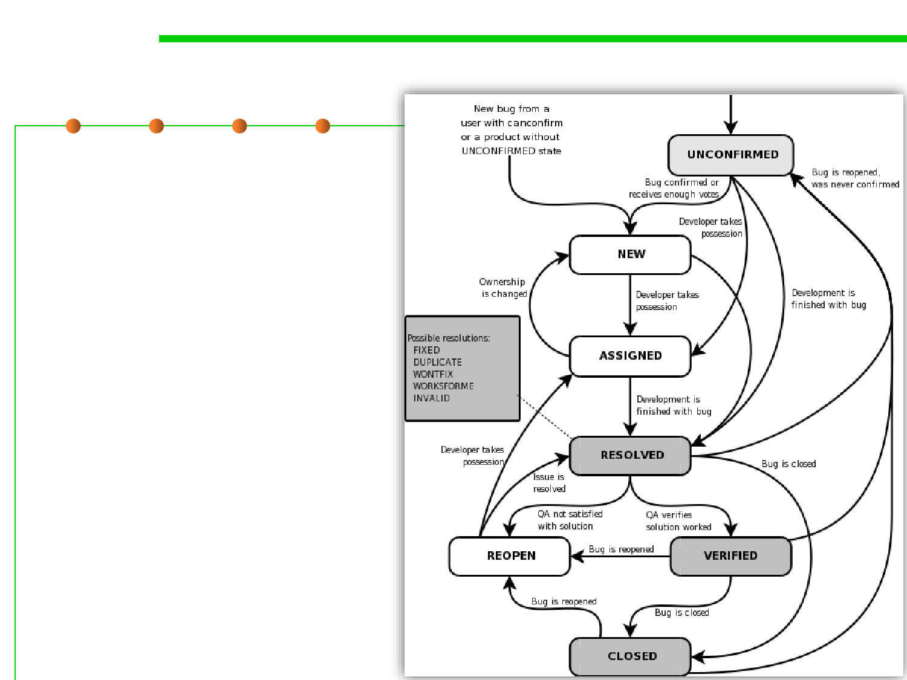
Bug Lifecycle
▪ A bug should go through
the life cycle to be closed.
The bug attains different
states in the life cycle.
▪ States of a bug:
– New
– Open
– Assign
– Tested/Verified
– Deferred
– Reopened
– Rejected
– Close
7.4 Debugging
Description of Stages
7.4 Debugging
▪ New: When the bug is posted for the first time, its state will be NEW.
This means that the bug is not yet approved. 被发现提出
▪ Open: After a tester has posted a bug, the lead of the tester approves
that the bug is genuine and he changes the state as OPEN. 被审核批准
▪ Assign: Once the lead changes the state as OPEN, he assigns the bug
to corresponding developer or developer team. The state of the bug
now is changed to “ASSIGN”. 被分配给开发者
▪ Resolved/Fixed/Test: When developer makes necessary code
changes and verifies the changes then he/she can make bug status as
‘Fixed’ and the bug is passed to testing team. 被解决/修正/测试
 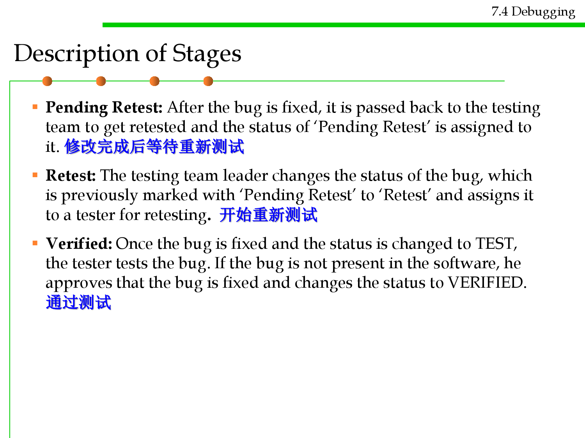
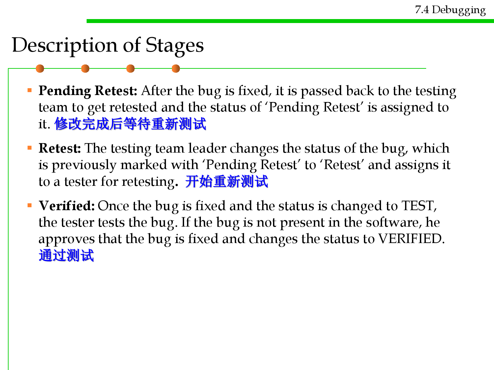
Description of Stages
7.4 Debugging
▪ Pending Retest: After the bug is fixed, it is passed back to the testing
team to get retested and the status of ‘Pending Retest’ is assigned to
it. 修改完成后等待重新测试
▪ Retest: The testing team leader changes the status of the bug, which
is previously marked with ‘Pending Retest’ to ‘Retest’ and assigns it
to a tester for retesting. 开始重新测试
▪ Verified: Once the bug is fixed and the status is changed to TEST,
the tester tests the bug. If the bug is not present in the software, he
approves that the bug is fixed and changes the status to VERIFIED.
通过测试

Description of Stages
7.4 Debugging
▪ Reopened: If the bug still exists even after the bug is fixed by the
developer, the tester changes the status to REOPENED. The bug
traverses the life cycle once again. 修复后仍存在问题，重新打开，重
走流程
▪ Closed: Once the bug is fixed, it is tested by the tester. If the tester
feels that the bug no longer exists in the software, he changes the
status of the bug to CLOSED. This state means that the bug is fixed,
tested and approved. 确认修复成功，关闭bug

Description of Stages
7.4 Debugging
▪ Deferred: The bug, changed to deferred state means the bug is
expected to be fixed in next releases. The reasons for changing the bug
to this state have many factors. Some of them are priority of the bug
may be low, lack of time for the release or the bug may not have major
effect on the software. 被推迟到下个版本修正，优先级低
▪ Duplicate: If the bug is repeated twice or the two bugs mention the
same concept of the bug, then one bug status is changed to
“DUPLICATE”. 重复出现
▪ Pending Reject: If the developers think that a particular behavior of
the system, which the tester reports as a bug has to be same and the
bug is invalid, in that case, the bug is rejected and marked as ‘Pending
Reject’. 无效bug，标记为待拒绝
▪ Rejected/Invalid: Some times developer or team lead can mark the
bug as Rejected or invalid if the system is working according to
specifications and bug is just due to some misinterpretation. 被拒绝
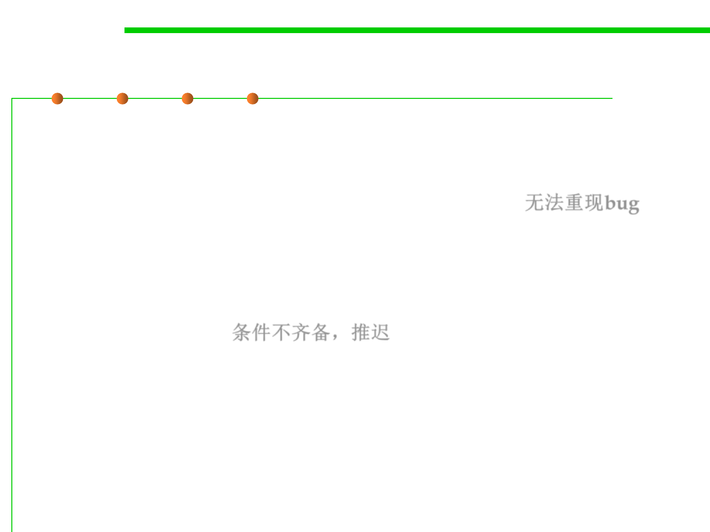
Description of Stages
7.4 Debugging
▪ Could not reproduce: If developer is not able to reproduce the bug
by the steps given in bug report by QA then developer can mark the
bug as ‘CNR’. QA needs action to check if bug is reproduced and can
assign to developer with detailed reproducing steps. 无法重现bug
▪ Postponed: Sometimes, testing of a particular bug has to be
postponed for an indefinite period. This situation may occur because
of many reasons, such as unavailability of Test data, unavailability of
particular functionality etc. That time, the bug is marked with
‘Postponed’ status. 条件不齐备，推迟

Software Construction
(3) Common Types of Bugs

Common Types of Bugs
7.4 Debugging
▪ Maths bugs, such as Division by zero, Arithmetic overflow
▪ Logic bugs, such as Infinite loops and infinite recursion
▪ Syntax bugs, such as Use of the wrong operator, such as performing
assignment instead of equality
▪ Resource bugs
– Using an un-initialized variable
– Resource leaks, where a finite system resource such as memory or file
handles are exhausted by repeated allocation without release.
– Buffer overflow, in which a program tries to store data past the end of
allocated storage.
▪ Team working bugs
– Comments out of date or incorrect
– Differences between documentation and the actual product

Software Construction
(4) Bug report system and issue
tracking system
Bugzilla
7.4 Debugging
▪ Bugzilla is a web-based general-purpose bug tracker and testing
tool originally developed and used by the Mozilla project
– Report a new bug
– Search for an existing bug
– See summary bug reports and charts
– Make contributions to bug fix
▪ First released in 1998, it has been adopted by a variety of
organizations for use as a bug tracking system for both free and
open-source software and proprietary projects and products.
▪ https://www.bugzilla.org/
7.4 Debugging


Adding a bug
7.4 Debugging
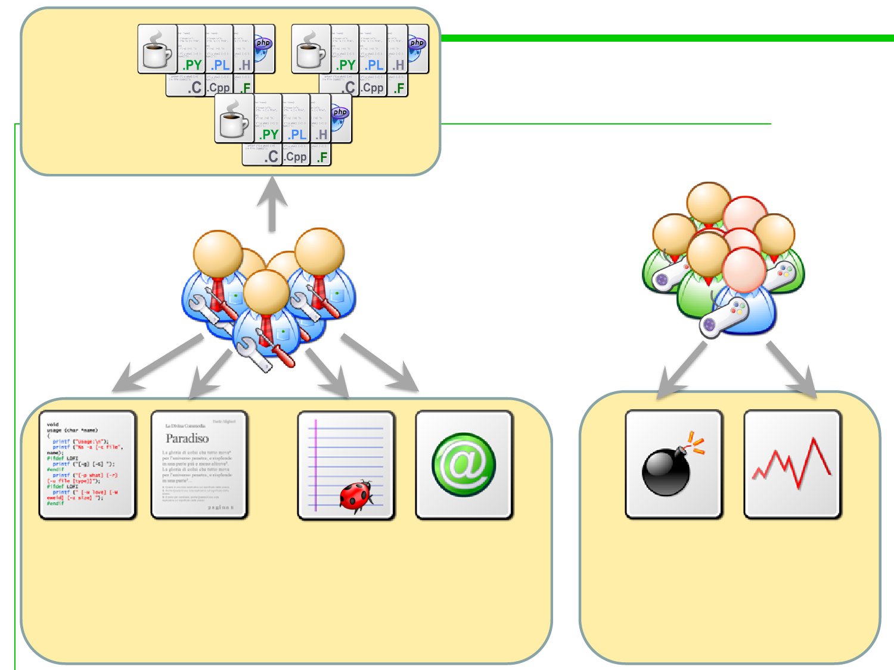
Sourceforge
GoogleCode
GitHub
Code Repos
7.4 Debugging
Source Control
CVS/SVN/GIT
Bugzilla Mailing
lists
Historical Repositories
Crash Field
Repos Logs
Runtime Rep2o1 s

Software Construction
(4) Debugging

7.4 Debugging
Defensive Programming → Testing → Debugging
▪ Defensive Programming: to make bugs impossible at design time;
▪ Testing: to uncover problems in a program and thereby increase
your confidence in the program’s correctness.
▪ So what?
▪ What if some tests fail?
▪ You have no choice but to debug – particularly when the bug is
found only when you plug the whole system together, or reported by
a user after the system is deployed, in which case it may be hard to
localize it to a particular module.
What is Debugging?
7.4 Debugging
▪ Debugging is the process of identifying the root cause of an error
and correcting it. 调试是发现错误根源并纠正错误的过程。
▪ It contrasts with testing, which is the process of detecting the error
initially, debugging occurs as a consequence of successful testing.
调试是成功测试的后续步骤。
– On some projects, debugging occupies as much as 50 percent of the total
development time.
– For many programmers, debugging is the hardest part of programming.
▪ Like testing, debugging isn’t a way to improve the quality of your
software, but it’s a way to diagnose defects.
– Software quality must be built in from the start. The best way to build a
quality product is to develop requirements carefully, design well, and use
high-quality coding practices. 测试和调试不是增强软件质量的手段，而是
诊断缺陷的方法。
– Debugging is a last resort. 调试是最后的手段
Debugging vs. Testing
7.4 Debugging
▪ Debugging is not testing but often occurs as a consequence of
testing.
▪ The debugging process begins with the execution of a test case.
Results are assessed and a lack of correspondence between
expected and actual performance is encountered.
▪ In many cases, the noncorresponding data are a symptom of an
underlying cause as yet hidden. The debugging process attempts to
match symptom with cause, thereby leading to error correction. 测
试发现现象，调试发现本质。

Why is debugging so difficult?
7.4 Debugging
▪ The symptom and the cause may be geographically remote. 症状同
原因之间距离较远，难以定位原因
– The symptom may appear in one part of a program, while the cause may
actually be located at a site that is far removed.
– Highly coupled components exacerbate this situation.
▪ The symptom may disappear (temporarily) when another error is
corrected. 症状可能是临时的
▪ The symptom may actually be caused by non-errors (e.g., round-off
inaccuracies).症状可能并不是由错误引起的
▪ The symptom may be caused by human error that is not easily
traced. 症状可能是由人工操作引起的，难以追踪
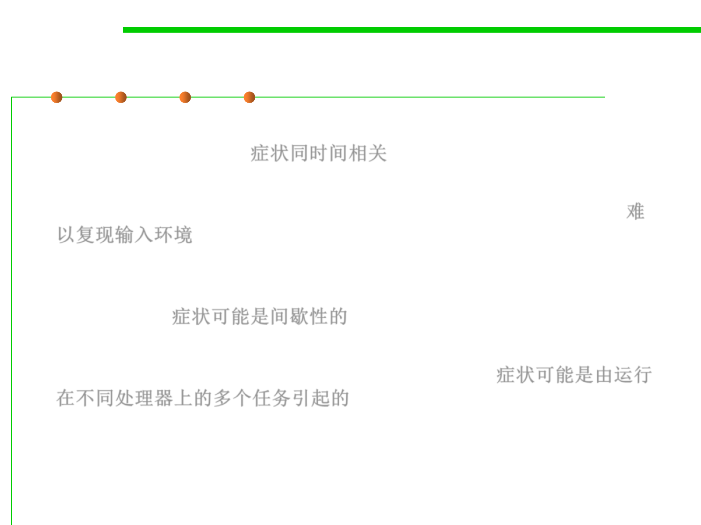
Why is debugging so difficult?
7.4 Debugging
▪ The symptom may be a result of timing problems, rather than
processing problems. 症状同时间相关
▪ It may be difficult to accurately reproduce input conditions (e.g., a
real-time application in which input ordering is indeterminate). 难
以复现输入环境
▪ The symptom may be intermittent. This is particularly common in
embedded systems that couple hardware and software
inextricably. 症状可能是间歇性的
▪ The symptom may be due to causes that are distributed across a
number of tasks running on different processors. 症状可能是由运行
在不同处理器上的多个任务引起的

Software Construction
2 Process for debugging
Debugging Process
7.4 Debugging
▪ Reproduce: Find a way to reliably and conveniently reproduce the
problem on demand. 重现问题
▪ Diagnose/Locating: Construct hypotheses, and test them by
performing experiments until you are confident that you have
identified the underlying cause of the bug. 找到原因
Debugging Process
7.4 Debugging
▪ Fix:
– Design and implement changes that fix the problem, avoid introducing
regressions, and maintain or improve the overall quality of the software.
解决问题，避免引入回归性错误
▪ Reflect: 反思
– Learn the lessons of the bug. Where did things go wrong? Are there any
other examples of the same problem that will also need fixing? What can
you do to ensure that the same problem doesn’t happen again? 总结经验

Debugging Process
7.4 Debugging
▪ Debugging consists of determining the exact nature and location of
the suspected error and fixing the error.
▪ Debugging attempts to match symptom with cause, thereby
leading to error correction.
▪ Locating the error represents about 95% of the debugging activity.

The Scientific Method of Debugging
7.4 Debugging
▪ Here are the steps you go through when you use the scientific
method:
– 1. Gather data through repeatable experiments.
– 2. Form a hypothesis that accounts for the relevant data.
– 3. Design an experiment to prove or disprove the hypothesis.
– 4. Prove or disprove the hypothesis.
– 5. Repeat as needed.

The Scientific Method of Debugging
7.4 Debugging
▪ An effective approach for debugging:
– Stabilize the error. (Reproduce)
– Locate the source of the error (Diagnose, bug localization).
• Gather the data that produces the defect.
• Analyze the data that has been gathered and form a hypothesis about the defect.
• Determine how to prove or disprove the hypothesis, either by testing the
program or by examining the code.
• Prove or disprove the hypothesis using the procedure identified in 2(c).
– Fix the defect. (Fix)
– Test the fix.
– Look for similar errors.

Software Construction
(1) Reproduce the bug

Reproduce the Bug
7.4 Debugging
▪ Start by finding a small, repeatable test case that produces the
failure. 首先找到一个可产生失败的小的可重复测试用例。
▪ If the bug was found by regression testing, then you’re in luck; you
already have a failing test case in your test suite.
▪ If the bug was reported by a user, it may take some effort to
reproduce the bug.
▪ For graphical user interfaces and multithreaded programs, a bug
may be hard to reproduce consistently if it depends on timing of
events or thread execution. (to be discussed in Chapter 10)

Reproduce
7.4 Debugging
▪ Why is reproducing the problem so important? Because if you
can’t, then it’s almost impossible to make progress.
▪ Specifically: 重现现象的重要性
– The empirical process relies upon our ability to watch the software
executing in the presence of the bug. If we can’t get the software to
misbehave in the first place, then this, the most powerful weapon in our
armory, is lost. 无法重现则无法观察
– Even if you do somehow manage to come up with a theory about why the
software might be misbehaving, how are you going to prove it if you can’t
reproduce the problem?无法重现则无法证明分析的正确性
– If you think that you’ve implemented a fix, how are you going to
demonstrate that it really does fix the problem?无法重现则无法证明修补的
正确性

Start reproducing from bug reports
7.4 Debugging
▪ Start reproducing with the Obvious -- bug report (from testing).
– The first thing to try is simply following the steps described (or implied)
by the bug report.
– Even if this simplistic approach doesn’t bear fruit, then the nature of the
bug will provide you with good clues about what to try next.

7.4 Debugging
Successful reproduction is all about control
▪ Successful reproduction is all about control
– If you control all the relevant variables, you will reproduce your problem.
– The trick, of course, is identifying which variables are relevant to the bug
at hand, discovering what you need to set them to, and finding a way to
do so. 控制所有的变量是重现的重点
▪ As a developer, your situation is different from your users’.
– You’re working with the very latest source code, whereas they’re likely to
be running something compiled several weeks, months, or even years ago.
– Your configuration will be different, as will your network environment,
the peripherals you’re using, and so on.
– One or more of these differences are what is stopping the bug from
reproducing—your first task, therefore, is to identify and eliminate those
differences.
– 使用的版本不同、环境不同，妨碍错误重新，首先需要消除差异

7.4 Debugging
What to control in order to reproduce bugs?
▪ The software itself 使用相同版本的软件
– If the bug is in an area that has changed recently, then ensuring that
you’re running the same version of the software as it was reported against
is a good first step.
▪ The environment it’s running within 使用相同的环境
– If interaction with an external system (some particular piece of hardware
or a remote server perhaps) is involved, then you probably want to ensure
that you’re using the same.
▪ The inputs you provide to it 使用相同的配置
– If the bug is related to an area that behaves very differently depending
upon how the software is configured, then start by replicating the user’s
configuration.

(1) To control the software
7.4 Debugging
▪ Controlling the Software
– Firstly, compiling from the same source. You also need to ensure that you
use the same compiler, configured in the same way, and the same runtime,
libraries, and any third-party code that is integrated with your software.
– Of course, using the same tools gets you nowhere if you don’t use them in
exactly the right sequence and with the same configuration as the software
was originally built with.
– The best way to ensure that you do is to create an automated build
process. (See 2.2) 最好的方法是通过构建工具确保构建环境和对象一致

(2) Controlling the Environment
7.4 Debugging
▪ What constitutes your software’s environment depends on what
kind of software it is.
– For traditional desktop software, the operating system is probably most
relevant.
– For web software, it’s the browser.
– For network software, it’s the other software you’re communicating with,
– and for embedded code, it’s the hardware you’re interfacing with.
▪ The key in all cases is first knowing what environment the bug
manifests in. 确定出现bug的环境
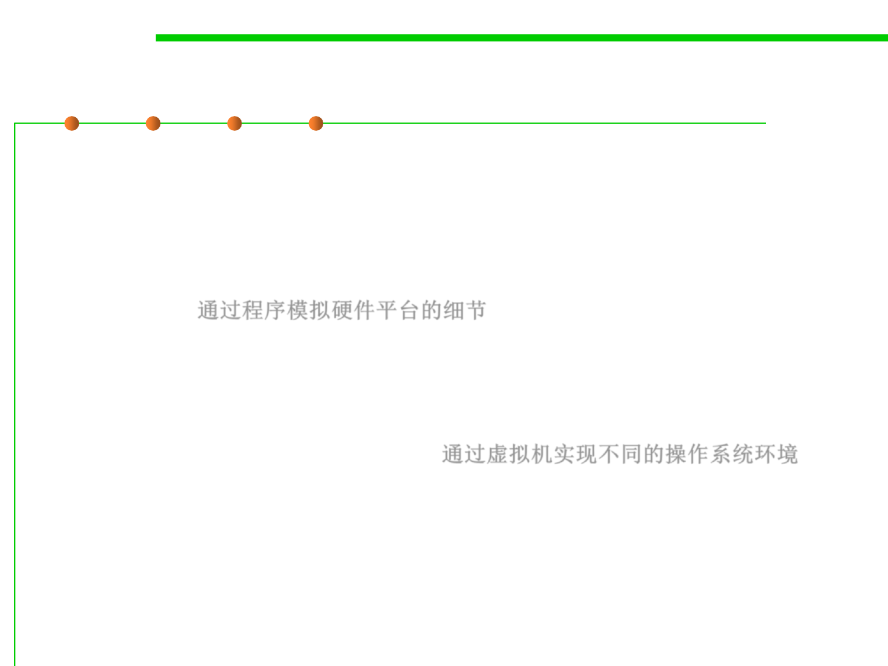
(2) Controlling the Environment
7.4 Debugging
▪ Two things have helped immeasurably with this issue.
– The first is hardware abstraction—some hardware in your computer
might significantly affect your software’s behavior, such as gaming.
Hardware abstractions are sets of routines in software that emulate some
platform-specific details, giving programs direct access to the hardware
resources. 通过程序模拟硬件平台的细节
– The second is virtual machines—it’s now possible to run many different
operating systems and configurations on a single computer
simultaneously, with very little effort indeed. This is of obvious use if
you’re working on cross-platform software, but it can also be helpful in a
wide range of other circumstances. 通过虚拟机实现不同的操作系统环境
– E.g., in web software, a wide range of different browsers(probably several
different versions of each) need to be supported. Having a number of
different virtual machines available, each configured with a different
operating system and browser combination.
(3) Controlling Inputs
7.4 Debugging
▪ Your software’s inputs may be files on disc, sequences of user
interface operations, or responses from third-party servers or
hardware.
▪ Whatever form they take, the key is to first identify them so that
you can then replay them exactly.
▪ The most lucky thing is that the relevant inputs will be specified
in the bug report.
▪ If you don’t have all the information you need, you can
– Infer what the inputs might be 推测可能的输入
– record the inputs. 利用输入记录
(3) Controlling Inputs by Inferring
7.4 Debugging
▪ The starting point for inferring the right inputs to reproduce the
problem is to assume that the problem really does exist and then
reverse engineer the necessary conditions that would lead to that
behavior. 利用逆向设计推断导致错误的输入
– 1. Work Backward 根据代码回溯工作的运行顺序
– 2. Explore the Landscape 探测可能的输入值(边界值分析，分支覆盖)
– 3. Force Error Conditions 利用错误条件，判断一些错误是否发生了
– 4. Introduce Randomness 利用随机性

7.4 Debugging
(3) Controlling Inputs by Recording Inputs
▪ Logging
– If your software already has built-in logging, this may simply be a case of
asking the user to switch it on and send you the results.
– Alternatively, you may have to ship them a custom build of the software
or some other logging solution (such as a debugging shim or proxy).
– Whichever solution you decide to use, seeing exactly what the user is
really doing can be worth its weight in gold.
An example for controlling inputs
7.4 Debugging
▪ A user passes the whole text of Shakespeare’s plays into your
method and discovers that instead of returning a predictably
common English word like "the" or "a", the method returns
something unexpected, perhaps "e".
▪ Shakespeare’s plays have 100,000 lines containing over 800,000
words, so this input would be very painful to debug by normal
methods, like print-debugging and breakpoint-debugging.
An example for controlling inputs
7.4 Debugging
▪ Debugging will be easier if you first work on reducing the size of
the buggy input to something manageable that still exhibits the
same (or very similar) bug: 保持复现bug的前提下，降低输入规模
– Does the first half of Shakespeare show the same bug? (Binary search!
Always a good technique) 二分法
– Does a single play have the same bug? 某个剧可复现bug
– Does a single speech have the same bug? 某个会话可复现bug
▪ Once you’ve found a small test case, find and fix the bug using that
smaller test case, and then go back to the original buggy input and
confirm that you fixed the same bug.
7.4 Debugging
(3) Controlling Inputs by Load and Stress
▪ Load and Stress
– Some bugs manifest only when the software is under some kind of stress.
– Software itself is having to do (handle a large number of simultaneous
requests, for example, or particularly large data sets).
– Something within the environment (high levels of general network traffic,
say, or restricted free memory).
▪ A load-testing tool executes a script that simulates a more-or-less
realistic usage pattern.
– Stress-testing tools are similar, except they generate load indirectly (E.g.,
you might use one to allocate and deallocate lots of memory while your
software is running, or to consume lots of CPU time.)
– QuickTest Professional and LoadRunner: http://www.hp.com/
– JMeter: http://jakarta.apache.org/jmeter/
– The Grinder: http://grinder.sourceforge.net/

Software Construction
(2) Diagnosing the bug
Diagnose
▪ Diagnose: Understand the location and cause of
the bug
▪ The scientific method:
– The scientific method can work in two different
directions.
– 1. In one case, we start with a hypothesis and attempt
to create experiments, the results of which will either
support or refute it. 方法1：从假设开始，构造实验，
证明它是对的或者错的。
– 2. In the other, we start with an observation that
doesn’t fit with our current theory and as a result
modify that theory or possibly even replace it with
something completely different. 方法2：从不符合理论
的观察结果开始，修正理论。
– In debugging, we almost always start from the latter.
7.4 Debugging

Diagnosis process
7.4 Debugging
▪ Study the data. Look at the test input that causes the bug, and the
incorrect results, failed assertions, and stack traces that result from it.
▪ Hypothesize. Propose a hypothesis, consistent with all the data,
about where the bug might be, or where it cannot be. It’s good to
make this hypothesis general at first.
▪ Experiment. Devise an experiment that tests your hypothesis. It’s
good to make the experiment an observation at first – a probe that
collects information but disturbs the system as little as possible.
▪ Repeat. Add the data you collected from your experiment to what
you knew before, and make a fresh hypothesis. Hopefully you have
ruled out some possibilities and narrowed the set of possible
locations and reasons for the bug.

Diagnose by experiments
7.4 Debugging
▪ Do Different Types of Experiments
– You can examine an aspect of the software’s internal state (either by
instrumenting it directly or by running it under a debugger). 检查内部状
态
– You can modify some aspect of how you run the software (modified
inputs, for example, or an alternative environment) and see whether it
behaves differently. 修改运行方式
– You can change the logic encoded within the software itself and examine
the effect of that change. 改变本身逻辑
▪ Which of these you choose depends upon the nature of your
hypothesis, and making the best choice comes down to experience
and intuition.
▪ Whichever you choose, however, the most important thing to bear
in mind is that your experiment must have a clear goal. 实验要有明
确的目标

Diagnose by experiments
7.4 Debugging
▪ Experiments Must Prove Something 实验必须起到验证的作用
– Experiments are a means to an end, not an end in themselves. There is no
point performing an experiment unless it proves something.
▪ One Change at a Time 每次只做一个修改
– One of the basic rules of constructing experiments is that you should make
only a single change at a time.
– This rule applies to any kind of change—changes to the source, the
environment, input files, and so on. It applies to anything, in fact, that
might have an effect on the software.
▪ Keep a Record of What You’ve Tried 做好记录
▪ Ignore Nothing 不要忽略任何细节
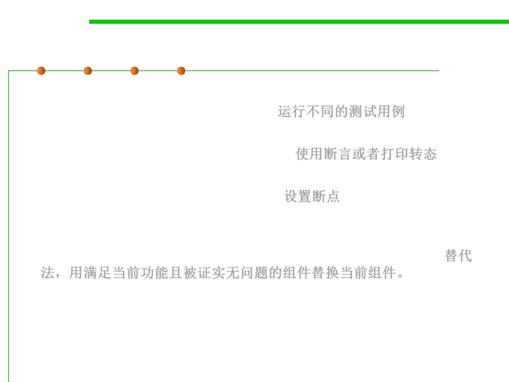
Some example experiments
7.4 Debugging
▪ Run a different test case. The test case reduction process discussed
above used test cases as experiments. 运行不同的测试用例
▪ Insert a print statement or assertion in the running program, to
check something about its internal state. 使用断言或者打印转态
▪ Set a breakpoint using a debugger, then single-step through the code
and look at variable and object values. 设置断点
▪ Swap components. If you have another implementation of a module
that satisfies the same interface, and you suspect the module, then
one experiment you can do is to try swapping in the alternative. 替代
法，用满足当前功能且被证实无问题的组件替换当前组件。

Diagnosis stratagem 1: Instrumentation
7.4 Debugging
▪ Instrumentation 插桩
– Instrumentation is code that doesn’t affect how the software behaves but
instead provides insight into why it behaves as it does. 插桩技术本身是代
码，其不影响软件本身的运行，帮助观察软件的运行。
– E.g., logging.
▪ Instrumentation isn’t limited to simple output statements,
however—you have the full facilities of the language at your
disposal.
▪ You can collect and collate data, evaluate arbitrary code, and test
for relevant conditions. 收集和整理数据，评估任意代码并测试相关
条件。

Diagnosis stratagem 1: Instrumentation
7.4 Debugging
while(node != null) {
node.process();
node = node.getNext();
}
HashSet processed = new HashSet();
Bug:
getNext() is returning
one or more nodes more
than once. It’s not
clear which nodes are
being processed more
than once.
while(node != null) {
if(!processed.add(node)) { // node is processed more than once
System.out.println("The problem node is: " + node);
}
node.process();
node = node.getNext();
}
7.4 Debugging
Diagnosis stratagem 2: Divide and Conquer 分治
▪ Divide and conquer, or binary chop / search, is a search strategy.
– It is the Swiss Army knife of debugging—it crops up again and again in a
wide variety of situations.
– It can provide you with a quick and easy way to exclude a large number of
candidates.
– E.g., perhaps your software contains a number of modules that can be
enabled and disabled independently? If so, try disabling them all and see
whether the bug still occurs. If it does, then you’ve eliminated a lot of code
that you won’t need to examine (and won’t confuse matters). If it doesn’t,
then you can quickly identify the problem module by enabling half and
rerunning your test.


"Wolf fence" algorithm “狼栅栏”算法
7.4 Debugging
▪ Edward Gauss described this simple but very useful and now
famous algorithm in a 1982:
——"There's one wolf in Alaska; how do you find it?
——First build a fence down the middle of the state, wait for
the wolf to howl, determine which side of the fence it is on.
——Repeat process on that side only, until you get to the point
where you can see the wolf."
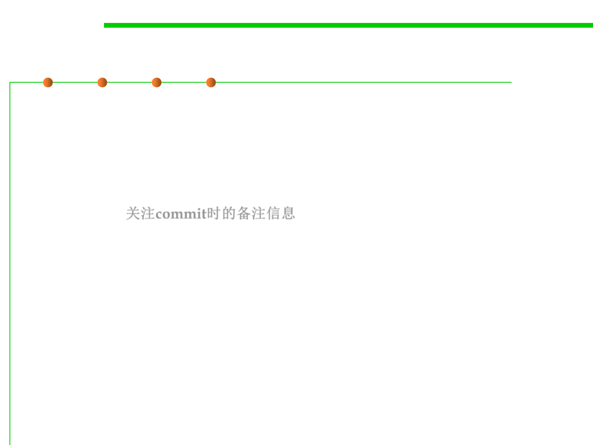
7.4 Debugging
Diagnosis stratagem 3: Leveraging VCS 利用版本控制系统
▪ Occasionally, a bug in functionality that used to work correctly but
was broken by some subsequent change. To this kind of problem,
there is one tool of particular value when regression hunting—
source control system.
– The first step is to review check-in comments—it may be that the culprit is
obvious. 关注commit时的备注信息
– If not, however, you can quickly pinpoint the change using the following
procedure.
• E.g., Imagine that you know that the bug wasn’t present in version 2.3, but it is
present in the current version, 3.0. In between 2.3 and 3.0 are 200 different check-
ins.
• You know the drill by now—check out and build the middle revision, and see
whether the bug is present. If not, it was introduced by a more recent change;
otherwise, it was one of the earlier ones. A few iterations later, and you know
exactly which change it was. -- binary chop
▪ Git source control system provides direct support for it in the form
of the git bisect command (“Wolf fence” ) 二分查找
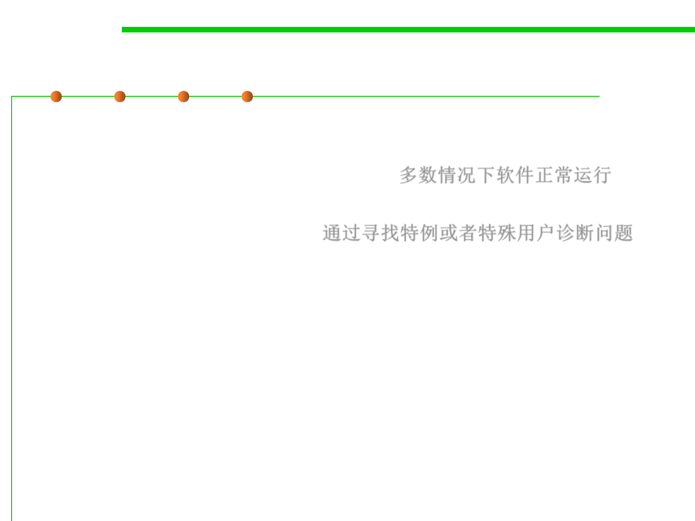
7.4 Debugging
Diagnosis stratagem 4: Focus on the differences
▪ Your software normally works. So, the feature affected by the bug
you’re trying to diagnose probably works correctly in almost all
situations or for almost everyone else. 多数情况下软件正常运行
▪ So, what you’re looking for is something that makes this particular
situation or customer special. 通过寻找特例或者特殊用户诊断问题
▪ Often these differences come to light when trying to reproduce the
problem.
▪ Does it happen in only one particular environment? In that case,
the problem is most likely in environment-specific code.
– E.g., Does it happen only with large input files? Most likely you’re looking
for a resource leak or a limit being exceeded.

7.4 Debugging
Diagnosis stratagem 5: Learn from others
▪ Sometimes the bug will relate to a widely used technology (your
compiler, for example, or a library or framework you’re using) in
which case there’s a chance that someone else has run afoul of the
same problem before you.
▪ In such instances, a little research on the Web can play dividends.
Perhaps someone has asked a question about the same kind of
failure module on a forum or has written a blog post describing the
pitfall they fell into, which turns out to be exactly the one you find
yourself in.
▪ Google it！
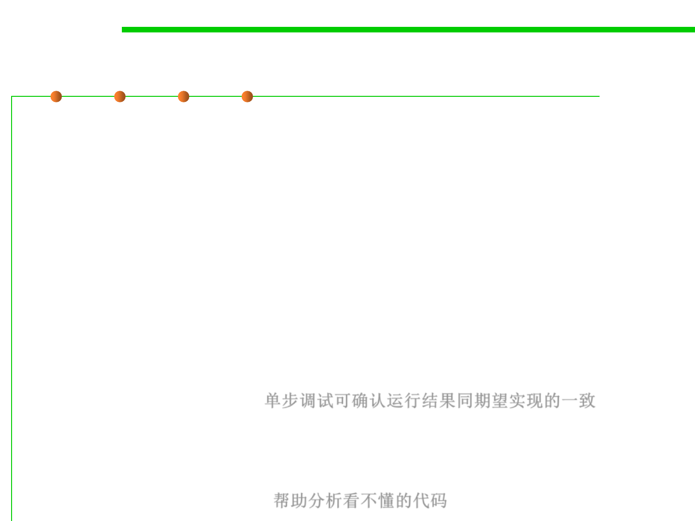
Diagnosis stratagem 6: Debugger
7.4 Debugging
▪ Debugger
– Debuggers vary dramatically in both sophistication and capabilities, from
simple command line–oriented examples to those that are fully integrated
into a graphical IDE.
– What they all have in common is that they allow us to examine the code as it
executes, setting breakpoints, single-stepping, and examining program
state.
▪ It’s particularly helpful at three different points of the development
life cycle:
– During initial development, it’s helpful when single-stepping through code
helps to convince us that what it’s really doing agrees with what we thought
we were implementing. 单步调试可确认运行结果同期望实现的一致
– If we have a theory about why the code is behaving in a particular way, we
can use the debugger to confirm or refute this theory. 验证想法的正确性
– Finally, a debugger helps us explore code that is behaving in a way we
simply don’t understand. 帮助分析看不懂的代码

Validate Your Diagnosis
7.4 Debugging
▪ Explain your diagnosis to someone else. They might spot a flaw, or
the cardboard cutout effect might work its magic allowing you to
do so.
▪ Check out a pristine copy of the source code, without any of the
changes you’ve made along the way, and verify that your analysis
still holds. You may have been careful not to introduce any
unintended side effects, but nothing gives you more confidence
that you succeeded than starting again from a known-good copy.
▪ Now that you understand the problem, are there any other ways in
which you can prove that it really does work the way that you
think it does? Try them quickly—do you see what you expect to?
▪ Play devil’s advocate, and imagine that you are wrong—what
mistake did you make?

Software Construction
(3) Fix the bug

Fix: Start from a clean source tree
7.4 Debugging
▪ Start from a clean source tree 从干净的代码开始
– Before diving in and starting to design your fix, the first order of business
is to ensure that you start from a clean source tree.
▪ Work out how you’re going to test your fix before making changes.
▪ Use testing to ensure that you’re working on a clean source tree
and fixing rightly.
– 1. Run the existing tests, and demonstrate that they pass.
– 2. Add one or more new tests, or fix the existing tests, to demonstrate the
bug (in other words, to fail).
– 3. Fix the bug.
– 4. Demonstrate that your fix works (the failing tests no longer fail).
– 5. Demonstrate that you haven’t introduced any regressions (none of the
tests that previously passed now fail).
 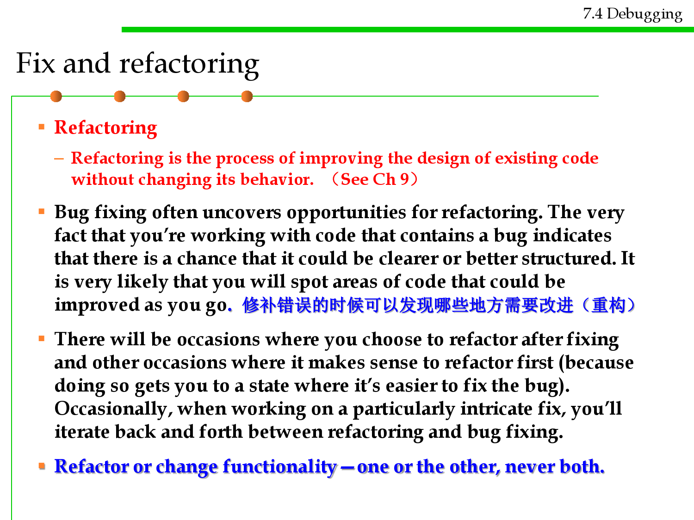
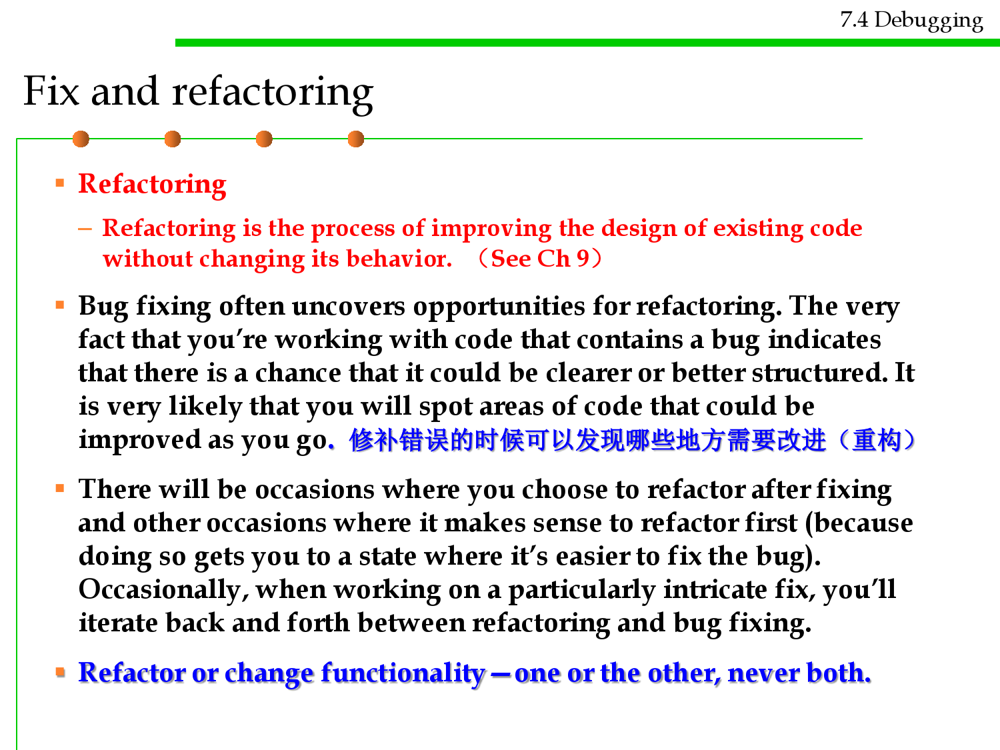
Fix and refactoring
7.4 Debugging
▪ Refactoring
– Refactoring is the process of improving the design of existing code
without changing its behavior. （See Ch 9）
▪ Bug fixing often uncovers opportunities for refactoring. The very
fact that you’re working with code that contains a bug indicates
that there is a chance that it could be clearer or better structured. It
is very likely that you will spot areas of code that could be
improved as you go. 修补错误的时候可以发现哪些地方需要改进（重构）
▪ There will be occasions where you choose to refactor after fixing
and other occasions where it makes sense to refactor first (because
doing so gets you to a state where it’s easier to fix the bug).
Occasionally, when working on a particularly intricate fix, you’ll
iterate back and forth between refactoring and bug fixing.
▪ Refactor or change functionality—one or the other, never both.

Fix and check-in
7.4 Debugging
▪ Checking In 签入
– From the point of view of debugging, source control’s main value is as an
audit trail.
– If someone does introduce a regression, you should be able to find out
exactly which change did so (and therefore what you need to do to fix it)
by searching back through previous versions.
▪ The rule is one logical change, one check-in. 一次逻辑修改，只做一
次签入
▪ Make one change at a time

Software Construction
(4) Reflection

7.4 Debugging
Reflect: How to ensure It’ll Never Happen Again
▪ Requirements:
– Were the requirements complete and correct? Perhaps they were
ambiguous, interpreted incorrectly, or misunderstood?
▪ Architecture or design:
– Was there an oversight within the architecture or design—something we
failed to take into account or allow for? Or perhaps they’re fine, but we
failed to follow the design correctly?
▪ Testing:
– Did we have adequate tests covering this area? Or maybe the error was in
the tests themselves?
▪ Construction:
– Perhaps the author made a simple mistake when writing the code, or
maybe they misunderstood some aspect of the underlying technology
(libraries, compilers, and so forth).

Software Construction
3 Debugging tools

Debugging techniques
▪ Debugging by Brute Force Attack
▪ Debugging by Induction
▪ Debugging by Deduction
▪ Debugging by Backtracking
▪ Debugging by Testing
7.4 Debugging


Debugging by Brute Force
7.4 Debugging
▪ The most common scheme for debugging a program is the “brute
force” method.
– It is popular because it requires little thought and is the least mentally
taxing of the methods, but it is inefficient and generally unsuccessful. 简单
，但效率和成功率低
▪ Brute force methods can be partitioned into at least three
categories:
– Debugging with a memory dump. 分析内存转储文件
– Debugging according to the common suggestion to “scatter print
statements throughout your program.” 打印各种状态
– Debugging with automated debugging tools. 自动调试工具

Debugging tools
7.4 Debugging
▪ Syntax and Logic Checking (not covered in this course)
▪ Source-code comparator (See SCM in Chapter 2)
▪ Memory heap dump
▪ Print debugging / logging
▪ Stack trace
▪ Compiler Warning Messages
▪ Debugger
▪ Execution Profiler (See Chapter 8)
▪ Test Frameworks (See Section 7.5)


Software Construction
(1) Post-mortem debugging: memory
dump 事后调试-内存转储
Post-mortem debugging 事后调试
7.4 Debugging
▪ Post-mortem debugging is debugging of the program after it has
already crashed. 程序崩溃后调试
▪ Related techniques often include various tracing techniques and/or
analysis of memory dump (or core dump) of the crashed process.
涉及追溯技术和内存/内核转储技术
– The dump of the process could be obtained automatically by the system
(for example, when process has terminated due to an unhandled
exception), or by a programmer-inserted instruction, or manually by the
interactive user. 转储信息可自动生成、程序生成或手工生成
Memory dump
7.4 Debugging
▪ Memory dump: a file on hard disk containing a copy of the
contents of a process‘s memory of a specific time, produced when a
process is aborted by certain kinds of internal error or signal.包含
某时刻内存信息的文件
▪ When a program aborts, a memory
dump can be taken in order to
examine the status of the program
at the time of the crash.

Memory dump based debugging
7.4 Debugging
▪ The programmer looks into the buffers to see which data items
were being worked on when it failed.
▪ Counters, variables, switches and flags are also inspected.
▪ However, it is the most inefficient of the debugging methods:
– There’s a massive amount of data, most of which is irrelevant.
– A memory dump is a static picture of the program, showing the state of
the program at only one instant in time; to find errors, you have to study
the dynamics of a program (state changes over time).
– A memory dump is rarely produced at the exact point of the error, so it
doesn’t show the program’s state at the point of the error.
– There aren’t adequate methodologies for finding errors by analyzing a
memory dump.
– 缺点：信息杂乱、只有瞬时数据、不一定是错误发生时刻的数据、缺乏有
效的分析手段

Software Construction
(2) Post-mortem debugging: stack
trace
Stack trace based debugging
7.4 Debugging
▪ A stack trace is a listing of all pending method calls at a particular
point in the execution of a program.
▪ You have almost certainly seen stack trace listings—they are
displayed whenever a Java program terminates with an uncaught
exception. Java 程序只要以未捕获的异常终止，就会显示堆栈跟踪

Stack trace based debugging
7.4 Debugging
▪ You can access the text description of a stack trace by calling the
printStackTrace method of the Throwable class.
Throwable t = new Throwable();
StringWriter out = new StringWriter();
t.printStackTrace(new PrintWriter(out));
String description = out.toString();

Stack trace based debugging
7.4 Debugging
▪ A more flexible approach is the getStackTrace method that yields
an array of StackTraceElement objects, which you can analyze in
your program.
public class WhoCalled {
static void f() {
// Generate an exception to fill in the stack trace
try {
throw new Exception();
} catch (Exception e) {
for(StackTraceElement ste : e.getStackTrace())
System.out.println(ste.getMethodName());
}
}
static void g() { f(); }
static void h() { g();}
public static void main(String[] args) {
f();
System.out.println("-------------");
g();
System.out.println("-------------");
h();
}
}

Stack trace based debugging
7.4 Debugging
public class WhoCalled {
static void f() {
// Generate an exception to fill in the stack trace
try {
throw new Exception();
} catch (Exception e) {
for(StackTraceElement ste : e.getStackTrace())
System.out.println(ste.getMethodName());
}
}
static void g() { f(); }
static void h() { g();}
public static void main(String[] args) {
f();
System.out.println("-------------");
g();
System.out.println("-------------");
h();
}
}
Output:
f
main
-------------
f
g
main
-------------
f
g
h
main
The StackTraceElement class has methods to obtain the file name and line
number, as well as the class and method name, of the executing line of code.
The toString method yields a formatted string containing all of this information.

Stack trace based debugging
7.4 Debugging
▪ The static Thread.getAllStackTraces method yields the stack
traces of all threads. Here is how you use that method:
Map<Thread, StackTraceElement[]> map = Thread.getAllStackTraces();
for (Thread t : map.keySet())
{
StackTraceElement[] frames = map.get(t);
analyze frames
}

Software Construction
(3) Printf debugging
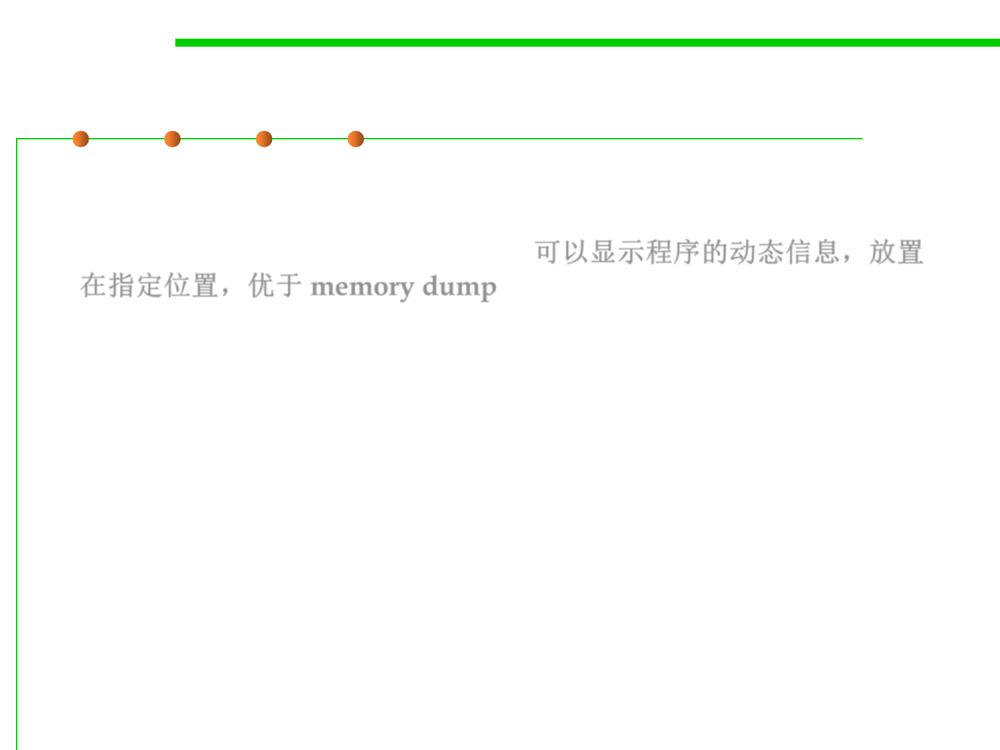
From memory dump to printf
7.4 Debugging
▪ Scattering statements throughout a failing program to display
variable values is better than a dump as it is not static and shows
the dynamics of a program. “printf”可以显示程序的动态信息，放置
在指定位置，优于 memory dump


Print debugging/tracing
7.4 Debugging
▪ Print debugging (or tracing) is the act of watching (live or
recorded) trace statements, or print statements, that indicate the
flow of execution of a process. This is sometimes called printf
debugging, due to the use of the printf function in C.
▪ It is to add trace code to the program to print out values of
variables as the program executes, using printf() or
System.out.println() statements, for example. It’s Simple but
effective.
System.out.println("Entering callMethod");
result = callMethod();
System.out.println("The result is " + result);
A tip for print debugging
7.4 Debugging
▪ Once the cause of trouble is figured out or the program will be
released, the printing statements for debugging should be
removed or disabled. 问题找到后，调试打印语句应该删除或禁用
▪ Method1- comment the print code 注释掉
//System.out.println("Entering callMethod");
result = callMethod();
//System.out.println("The result is " + result);
▪ Method2
public static void myPrint(String in) {
System.out.println(in);
}
myPrint("Entering callMethod");
result = callMethod();
myPrint("The result is " + result);
Coding & debugging
public static void myPrint(String in)
{
//System.out.println(in);
}
myPrint("Entering callMethod");
result = callMethod();
myPrint("The result is " + result);
released

Software Construction
(4) Logging

Logging
7.4 Debugging
▪ At its simplest level, System.out.println() or similar
throughout the code is enough.
▪ If your logging requirements are at all complex, however, you
should consider using one of the many logging frameworks.
▪ Logging frameworks provide the ability for your code to contain
configurable logging that can be enabled, disabled, or increased in
detail, typically at runtime and by individual feature. 日志框架提供
了包含可配置日志记录的功能，可以在运行时和单个功能部件中启用
、禁用或增加详细信息。
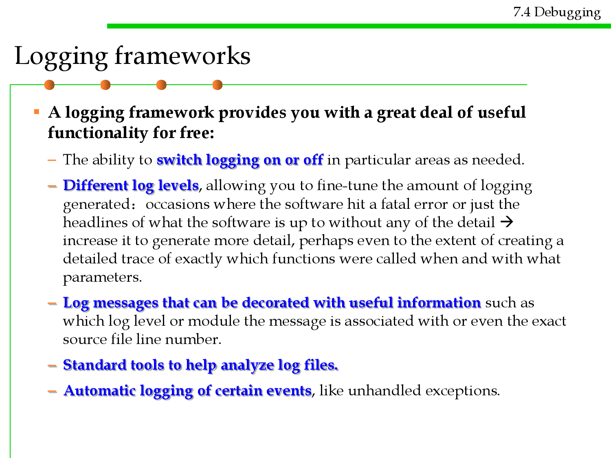
Logging frameworks
7.4 Debugging
▪ A logging framework provides you with a great deal of useful
functionality for free:
– The ability to switch logging on or off in particular areas as needed.
– Different log levels, allowing you to fine-tune the amount of logging
generated：occasions where the software hit a fatal error or just the
headlines of what the software is up to without any of the detail →
increase it to generate more detail, perhaps even to the extent of creating a
detailed trace of exactly which functions were called when and with what
parameters.
– Log messages that can be decorated with useful information such as
which log level or module the message is associated with or even the exact
source file line number.
– Standard tools to help analyze log files.
– Automatic logging of certain events, like unhandled exceptions.
Logging frameworks
7.4 Debugging
▪ java.util.logging
– http://java.sun.com/j2se/1.4.2/docs/guide/util/logging/
– As of 1.4.2, Java includes a standard logging API java.util.logging,
commonly known as JUL.
▪ Log4j
– http://logging.apache.org/log4j/
– Apache log4j is probably the best-known Java logging library, and ports
exist to most major languages.
▪ Logback: http://logback.qos.ch/
▪ SLF4J: http://www.slf4j.org/
▪ syslog-ng: http://www.balabit.com/network-security/syslog-ng/
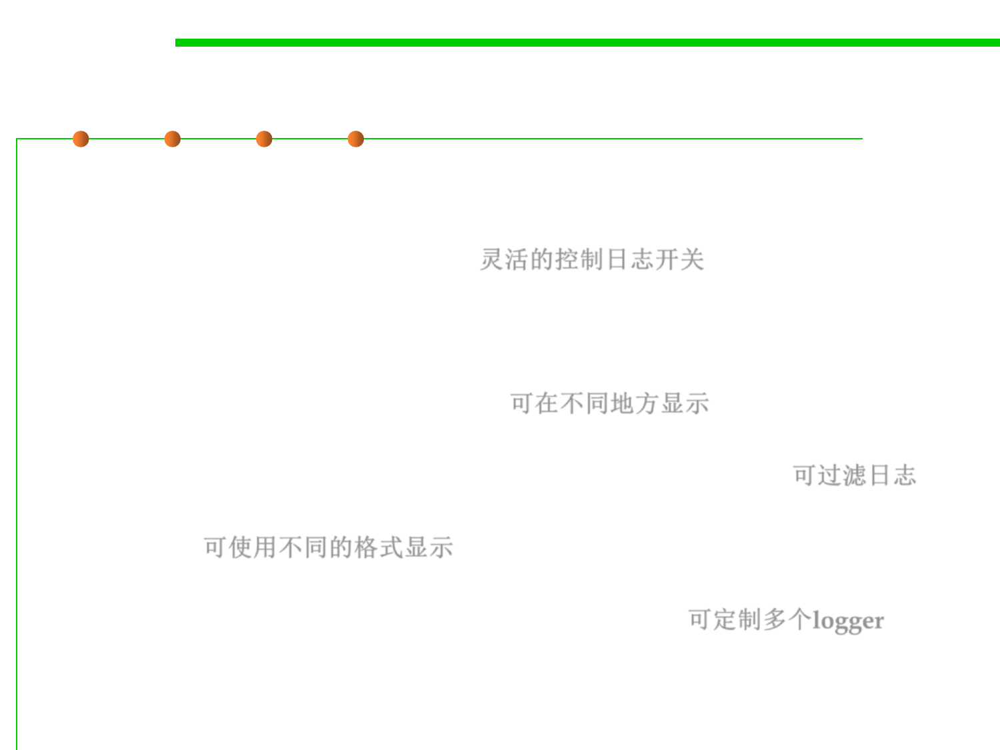
java.util.logging
7.4 Debugging
▪ java.util.logging API:
– It is easy to suppress all log records or just those below a certain level, and
just as easy to turn them back on. 灵活的控制日志开关
– Suppressed logs are very cheap, so that there is only a minimal penalty for
leaving the logging code in your application.
– Log records can be directed to different handlers—for displaying in the
console, writing to a file, and so on. 可在不同地方显示（console,file, …)
– Both loggers and handlers can filter records. Filters can discard boring log
entries, using any criteria supplied by the filter implementor. 可过滤日志
– Log records can be formatted in different ways—for example, in plain text
or XML. 可使用不同的格式显示
– Applications can use multiple loggers, with hierarchical names such as
com.mycompany.myapp, similar to package names. 可定制多个logger
– By default, the logging configuration is controlled by a configuration file.
– Applications can replace this mechanism if desired.

java.util.logging: Logger
7.4 Debugging
▪ Basic Logging
– For simple logging, use the global logger and call its info method: 使用默
认的logger
import java.util.logging.*;
Logger.getGlobal().info("File->Open menu item selected");
Results:
May 10, 2013 10:12:15 PM LoggingImageViewer fileOpen
INFO: File->Open menu item selected
– You can call the below code at an appropriate place (such as the
beginning of main), then all logging is suppressed 开关日志
Logger.getGlobal().setLevel(Level.OFF);
java.util.logging: Logger
7.4 Debugging
▪ Advanced Logging -- define your own logger
– In a professional application, you wouldn’t want to log all records to a
single global logger. Instead, you can define your own loggers.
– Call the getLogger method to create or retrieve a logger: 定义自己的logger
import java.util.logging.*;
private static final Logger myLogger = Logger.getLogger("com.mycompany.myapp");
//often using class name as logger name
Or
public class LogTest {
static String strClassName = LogTest.class.getName(); //get class name
static Logger myLogger = Logger.getLogger(strClassName);
// using class name as logger name
……
myLogger.info(" XXXX ");
}
java.util.logging: Logger
7.4 Debugging
▪ There are seven logging levels for logger:
– SEVERE
– WARNING
– INFO
By default, the top three levels are actually logged.
– CONFIG
– FINE
– FINER
– FINEST
▪ Set logging level setLevel():
E.g., logger.setLevel(Level.FINE);
– Now FINE and all levels above it are logged.
– You can also use Level.ALL parameter to turn on logging for all levels
– Level.OFF parameter to turn all logging off.


java.util.logging: Logger
import java.util.logging.Logger;
public class LevelTest {
private static String name = LevelTest.class.getName();
private static Logger log = Logger.getLogger(name);
public void sub(){
log.severe("severe level");
log.warning("warning level");
log.info("info level");
log.config("config level");
log.fine("fine level");
log.finer("finer level");
log.finest("finest level");
}
public static void main(String[] args){
LevelTest test = new LevelTest();
test.sub();
}
}
7.4 Debugging
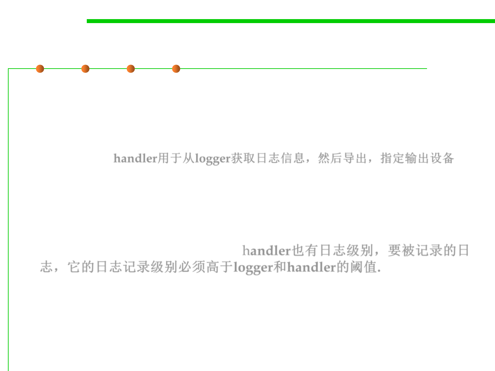
java.util.logging: Handler
7.4 Debugging
▪ Logging Handlers
– A handler object takes log messages from a logger and exports them. It
might for example, write them to a console or write them to a file, or send
them to a network logging service, or forward them to an OS log, or
whatever. handler用于从logger获取日志信息，然后导出，指定输出设备
– By default, loggers send records to a ConsoleHandler(which control what to
show in console) that prints them to the System.err stream.
▪ Like loggers, handlers have a logging level (also the 7 levels). For a
record to be logged, its logging level must be above the threshold of
both the logger and the handler. handler也有日志级别，要被记录的日
志，它的日志记录级别必须高于logger和handler的阈值.
▪ The log manager configuration file(by default,
the logging.properties file in JRE_HOME/lib) sets the logging level of
the default console handler as
– java.util.logging.ConsoleHandler.level=INFO

java.util.logging: Handler
7.4 Debugging
▪ Alternatively, you can bypass the configuration file altogether and
install your own handler.
import java.util.logging.*;
public class LevelTest {
private static String name = LevelTest.class.getName();
private static Logger log = Logger.getLogger(name);
public void sub() {
log.setLevel(Level.FINEST);
log.setUseParentHandlers(false);
Handler handler = new ConsoleHandler();
handler.setLevel(Level.FINEST);
log.addHandler(handler);
log.severe("severe level");
log.warning("warning level");
log.info("info level");
log.config("config level");
log.fine("fine level");
log.finer("finer level");
log.finest("finest level");
}
public static void main(String[] args) {
LevelTest test = new LevelTest();
test.sub();
}
}
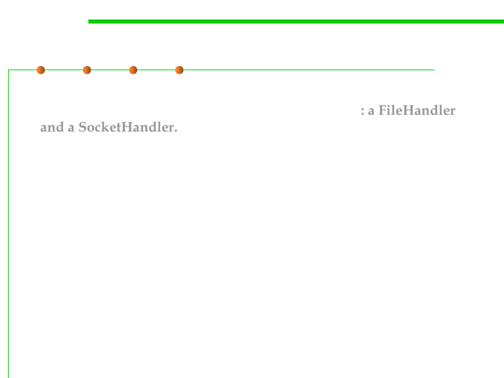
java.util.logging: Handler
7.4 Debugging
▪ To send log records elsewhere, add another handler. The logging
API provides two useful handlers for this purpose: a FileHandler
and a SocketHandler.
▪ The SocketHandler sends records to a specified host and port.
▪ Of greater interest is the FileHandler that collects records in a file.
– By default, the records are formatted in XML.
FileHandler handler = new FileHandler(“c:/log/20180418.log”);
logger.addHandler(handler);
handler.setLevel(Level.FINEST);
logger.addHandler(handler);
log.severe("severe level");
log.warning("warning level");
log.info("info level");
log.config("config level");
java.util.logging: Formatters
7.4 Debugging
▪ The ConsoleHandler and FileHandler classes emit the log records
in text and XML formats.
▪ However, you can define your own formats as well. You need to
extend the Formatter class and override the method: String
format(LogRecord record). Format the information in the record in
any way you like and return the resulting string.
▪ In your format method, you may want to call the method: String
formatMessage(LogRecord record). That method formats the
message part of the record, substituting parameters and applying
localization.
▪ Finally, call the setFormatter method to install the formatter into
the handler.
▪ 利用Formatter类格式化信息
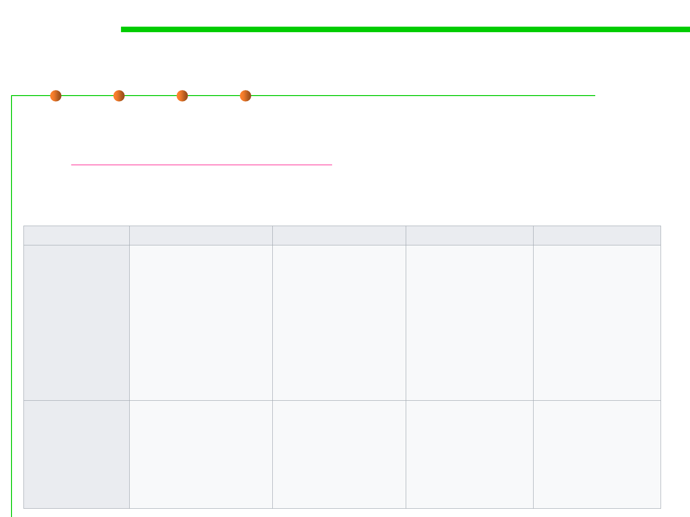
Log4j
7.4 Debugging
▪ Apache Log4j is a Java-based logging utility.
– http://logging.apache.org/log4j/
– Apache log4j is probably the best-known Java logging library, and ports
exist to most major languages.
Framework
Log4J
Supported log levels
FATAL
ERROR
WARN
INFO
DEBUG
TRACE
Standard appenders
Popularity
AsyncAppender,
JDBCAppender,
JMSAppender,
LF5Appender,
NTEventLogAppender,
NullAppender,
SMTPAppender,
SocketAppender,
SocketHubAppender,
SyslogAppender,
TelnetAppender,
WriterAppender
Widely used in many
projects and platforms
Cost / license
Apache License, Version
2.0
Java Logging API
SEVERE
WARNING
INFO
CONFIG
FINE
FINER
FINEST
Sun's default Java Virtual
Machine (JVM) has the
following:
ConsoleHandler,
FileHandler,
SocketHandler,
MemoryHandler
Comes with the JRE
External Logging
7.4 Debugging
▪ You can obtain useful information(External Logging) from outside
the software by intercepting traffic between it and elsewhere.
▪ You can insert a proxy in between the client&server. If a proxy
doesn’t exist for the protocol that you’re using or you can’t find a
way to configure things so that the proxy can intercept traffic, you
can consider using a network analyzer to capture all network
traffic
▪ Network Analyzers
– TCPDUMP: http://www.tcpdump.org/
– Wireshark: http://www.wireshark.org/
▪ Debugging Proxies
– Charles: http://www.charlesproxy.com/
– Fiddler: http://www.fiddlertool.com/

Software Construction
(5) Compiler Warning Messages

Compiler Warning Messages
7.4 Debugging
▪ One of the simplest and most effective debugging tools is your
own compiler. Compiler是最有效的调试工具
▪ Set your compiler’s warning level to the highest, pickiest level
possible and fix the code so that it doesn’t produce any compiler
warnings. 尽可能消除warnings ，终极目标是没有任何warnings
– Assume that the people who wrote the compiler know a great deal more
about your language than you do. If they’re warning you about
something, it usually means you have an opportunity to learn something
new about your language. Make the effort to understand what the
warning really means.
Compiler Warning Messages
7.4 Debugging
▪ Treat warnings as errors 将warnings当做errors进行处理
– Some compilers let you treat warnings as errors.
– One reason to use the feature is that it elevates the apparent importance of
a warning. Setting your compiler to treat warnings as errors tricks you
into taking them more seriously. 提高了warnings的重要性
– Another reason is that they often affect how your program compiles.
When you compile and link a program, warnings typically won’t stop the
program from linking but errors typically will. If you want to check
warnings before you link, set the compiler switch that treats warnings as
errors.
▪ Initiate project wide standards for compile-time settings 整个项目
组应采用统一的编译标准
– Set a standard that requires everyone on your team to compile code using
the same compiler settings. Otherwise, when you try to integrate code
compiled by different people with different settings, you’ll get a flood of
error messages and an integration nightmare.

Software Construction
(6) Debugger: breakpoints, etc

Debugger
7.4 Debugging
▪ Debuggers are software tools which enable the programmer to
monitor the execution of a program, stop it, restart it,
set breakpoints, and change values in memory.
▪ Main Debugger Operations
– Stepping Through the Source Code
• Breakpoints
• Single-stepping
• Resume operation
• Temporary breakpoints
– Inspecting Variables
– Issuing an “All Points Bulletin” for Changes to a Variable
• A watchpoint combines the notions of breakpoint and variable inspection.
– Moving Up and Down the Call Stack

Debugger: breakpoint
7.4 Debugging
▪ In software development, a breakpoint is an intentional stopping
or pausing place in a program, put in place for debugging
purposes. It is also sometimes simply referred to as a pause.
▪ A breakpoint is like a tripwire(绊网) within a program: You set a
breakpoint at a particular “place” within your program, and when
execution reaches that point, the debugger will pause the
program’s execution, and then the programmer can examine the
current state of the program.
▪ 执行到断点处，调试器将暂停程序，以便观察程序的当前状态
Debugger: breakpoint
7.4 Debugging
▪ Setting Breakpoints in Eclipse
– To set a breakpoint at a given line in Eclipse, double-click on that line.
– To delete a breakpoint at a given line in Eclipse, double-click the
breakpoint symbol on that line.
– To disable a breakpoint in Eclipse by right-clicking the breakpoint symbol
in the line in question. A menu will pop up. Note that the Toggle option
means to delete the break-point, while Disable/Enable means the obvious.

Debugger: breakpoint
▪ Debugging
7.4 Debugging
Click this button “Debug …”,
let program run in debugging mode
Program stops at
the first breakpoint
Breakpoint list
Debugger: breakpoint
7.4 Debugging
▪ Resuming Execution
– Resume the debugger will run to the next breakpoint and pause. 执行到下
一个断点
– Debugging step-by-step
– Step Over will just execute the line and go to the next one. If a method is
about to be invoked in this line, the debugger will not debug into the code
of that method, and execute that method completely as one entire step. 执
行当前行到下一行，不进入行中的方法
– Step Into will just execute the line and go to the next one. If a method is
about to be invoked in this line , the next step is to go into that method
and continue debugging step-by-step. 进入所在行的方法中
– Step Return If debugger is debugging a method step-by-step, “step
return” will let the debugger run the entire method(to the end of this
method) until it returns as one entire step. 执行到方法结束
Debugger: watchpoint
7.4 Debugging
▪ A watchpoint combines the notions of breakpoint and variable
inspection.
▪ The most basic form instructs the debugger to pause execution of
the program whenever the value of a specified variable changes.
▪ Conditional breakpoints in Eclipse:
7.4 Debugging
Debugger: inspecting variables
show all variable values
▪ Inspecting values in Eclipse
Put mouse on variable to show its value
Debugger: setting variables
▪ setting variables in Eclipse
7.4 Debugging
Add expression to set variable value
7.4 Debugging
Debugger: Eclipse Memory Analyzer (MAT)
▪ The Eclipse Memory Analyzer (MAT) can help provide details of
an application’s memory use. The tool is useful for both tracking
memory leaks and for periodically reviewing the state of your
system.
See the detailed in Chapter 8


Software Construction
Summary

Software Construction
The end
May 7, 2019